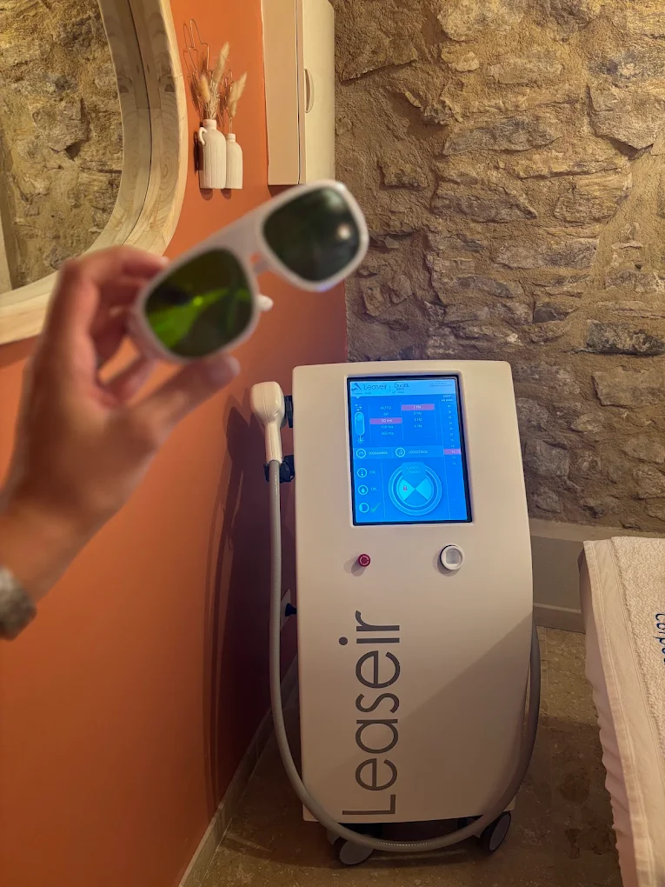

Vous habitez Forcalquier ou ses environs et cherchez une épilation laser définitive sérieuse ? L'institut LUMIA vous accueille à Manosque, à une vingtaine de minutes de la cité comtale par la D4100 puis la D13. L'épilation laser y est réalisée par Margaux, infirmière diplômée d'État formée au laser, avec un bilan personnalisé offert pour tout achat de séance ou de cure.
Pourquoi venir de Forcalquier chez LUMIA ?
Depuis Forcalquier, le trajet est direct et rapide, et l'institut est facile d'accès au centre de Manosque, avec plusieurs parkings gratuits à proximité. Vous y trouvez un cadre cocon, une praticienne unique qui vous suit d'une séance à l'autre, et un laser diode Leaseir adapté à de nombreux phototypes. De quoi en finir durablement avec le rasage et la cire sans renoncer à la proximité.

Premier échange gratuit, réservez votre bilan
L'épilation laser à l'institut
Le déroulement est le même pour toutes nos clientes et clients : un bilan obligatoire avant la première séance, le port de lunettes de protection, un rasage préalable de la zone, puis le passage du laser avec refroidissement. Pour tout savoir sur la méthode, les zones traitées et les précautions, consultez notre page complète sur l'épilation laser définitive à Manosque.
Accès depuis Forcalquier
Comptez environ 25 minutes depuis Forcalquier. L'institut se situe au 10 Bis avenue Jean Giono, à côté de l'opticien ATOL. Plusieurs parkings gratuits se trouvent à proximité : Dr Joubert, Monoprix, La Poste et Souvenir Français.
Questions fréquentes
Depuis Forcalquier, combien de temps pour venir à l'institut ?
L'institut LUMIA est à environ 25 minutes de Forcalquier, au centre de Manosque, par la D4100 puis la D13. Plusieurs parkings gratuits se trouvent à proximité immédiate.
Combien de séances d'épilation laser faut-il ?
En moyenne 8 à 12 séances selon la zone, la couleur du poil et votre type de peau. Le bilan préalable précise votre protocole et le nombre de séances estimé.
Le laser convient-il à ma peau ?
Le laser diode utilisé cible la mélanine du poil et convient à de nombreux phototypes. Une peau récemment bronzée fait reporter la séance, et les poils blancs, blonds ou roux ne réagissent pas. Le bilan vérifie l'adéquation.
Le bilan est-il vraiment offert ?
Le bilan personnalisé, obligatoire avant la première séance, coûte 20 euros et il est offert pour tout achat de séance ou de cure.
Découvrez aussi la praticienne, nos soins du visage et les tarifs.